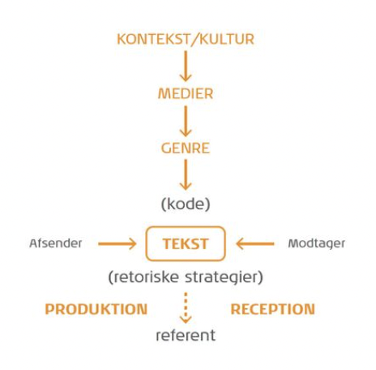

Grundlæggende Kommunikation
Kommunikations paradigmer
Kommunikation han deles op i to forskellige paradigmer/måder ar forstå verden og dermed kommunikation på. De to paradigmer er det humanisktiske- og det samfundsvidenskabelige paradigme.
Det humanisktiske paradigme
- Fokus på modtageren(der ses som aktiv og modtagende)
- Vil opnå dybere forståelse for modtageren
- Kvalitative undersøgelser - induktiv metode
- Interaktionsparadigmet, altså interaktioner mellem mennesker. Opfatter mennesket som aktivt og behovsstyrret
- Omverdenen betragtes som relativ ustabil og derfor uforudsiglig
- Man generalisere ud fra specifikke tilfæde
- Det unikke snarere end det generelle
- Udleder generelle antagelser på baggrund af få, men dybe undersøgelser
Andre karakteristiske træk
- Subjektiv
- Fortolkning
- Situationsbestemt
- Modtagerorienteret
- Interaktion mellem mennesker
- Mennesket ses som akti
Det samfundsvidenskabelige paradigme
- Fokus på afsenderen og dennes placering i omverdenen
- Afsenderen er den styrende i kommunikationsprocessen og paradigmet præges af en forståelse af kommunikation som transmission
- Sociologi, økonomi, jura med flere, og heraf kommer de anvendte metoder og teorier.
- Verden er uforudsiglig
Andre karakteristiske træk
- Objektivitet
- Forklaring
- Kvantitativ tilgang
- Deduktion
- Stabile omgivelser
- Afsenderorienteret
- Transmission
- Handlingsanvisende
- Modtageren ses som passiv
Typer af kommunikation
Non-verbal
- Kroppen, arme(gestik) og ansigt(mimik)
- Det nonverbale sender meddelelser om hvordan det verbale skal tolkes(metakommunikation
Verbale
Skriftlig kommunikation
- Bogstaver
- Ikke alle forstår det skriftlige ens
Hvad er kommunikation?
Man kan ikke, ikke kommunikere. Alt hvad vi foretager er kommunikation på en eller anden måde.
- Det vi siger og gør
- Det vi IKKE siger og gør
- Dem vi kommunikere med - Afsender, modtager og budskab
- Ikke alle tager imod og lytter
- Perception, vores opfattelse og de forventninger og tidligere viden man bringer med ind i kommunikationen
- Det at alle fortolker forskelligt alt efter en fortid og egen viden.
Kongruent og Inkongruent kommunikation
Kongruent kommunikation: Meddelelserne der sendes via de forskellige kanaler (fx verbal/nonverbal) er i overensstemmelse. ex. “Du er dejlig” (Smiler/ser forelsket ud). modtageren er tryg ved at der siges, også er det der menes.
Inkongruent kommunikation: Meddelelserne der sendes via de forskellige kanaler (verbal/nonverbal) er modsatrettede. Modtageren bliver utryg/usikker på at det der siges, også er det der menes. ex. “du er dejlig” (Vrisser/slår) - sarkasme
synkron og asynkron kommunikation
Synkron kommunikation: vil sige at de kommunikerende skriver eller taler sammen på samme tid. Noget man gør lige nu og her ex. Politisk debat på tv’et live eller telefon sammentale.
Asynkron kommunikation: Betyder at deltagerne skriftligt kan kommunikere sammen, men at der som oftest er en tidsforskydning i kommunikationen. Tidsforskudt ex. Mail, sms osv.
5 grundantagelser om kommunikation
- Man kan ikke ikke-kommunikere
- Enhver kommunikation består af to dele: Selve indholdet og oplysninger om det indbyrdes forhold, der er mellem dem, der kommunikere. Forholdet personerne har og hvordan de indbyrdes forstår indholdet.
- Den måde, vi udtrykker os på, og den måde, vi tolker hinandens kommunikation på, afhænger også af det forhold vi har til hinanden. Pause, betoninger,tegnsætning.
- Mennesker kommunikere både med en digital kode og en analog kode. Digital kode: hvad der siges (ord). Analog kode: hvordan det siges (tonefald, kropssprog og skrifttype/opsætning)
- Kommunikationsudveksling er enten symmetrisk eller asymmetrisk afhængelig, af om den hviler på lighed eller forskel i magt. ex. den der lære en er asymetrisk, da de har en form for magt om hvad der skal kommunikeres om.
Modeller
AIDA Modellen
AIDA modellen er et værktøj man kan bruge til at analysere fx reklamer og annoncer. Modellen er et analyseredskab og følger et hierarki af virkninger der i sidste ende skal lede til et salg.
- Attention(awareness) handler om at skabe opmærksomhed ved den potentielle kunde. Det er altså blikfanget i reklamen, der fanger kundes opmærksomhed.
- Interest er den potentielle kundes interesse eller nysgerrighed i produktet. Interest skabes ved en god salgstekst der fremhæver det gode ved produktet eller evt et budskab.
- Desire handler om at få kunden til at begærer produktet. Vi skal have kunden til at gå fra at kunne lide produktet til at ville ønske det. Dette kan man gøre ved at skabe en følelsesmæssig forbindelse mellem kunden og produktet.
- Action er her hvor købet sker. Det kan ske igennem fx en call to action funktion i form af fx et link til en online webshop.
IMK modellen
- International markeds kommunikation
- Sætter teksten(udvidet tekstbegreb) i centrum
- Der eksisterer ikke nogen kommunikationssituation, før modtager deltager; det er ikke nok, at en afsender sender et budskab af sted
- Har teksten i centrum som det, afsender og modtager producerer i fællesskab.
- Bygger på at kontekst/kultur, medier og genre er med til at forme teksten.
- Der sker ikke nogen kommunikationssituation før modtager deltager.
Modellens elementer
Afsenderen - den der står bag kommunikationen
- Primære afsender, fx en virksomhed - synlig i en annonce
- Sekundære afsender, fx en specialist der i en annonce fremhæver et produkt
Modtager - reciperere kommunikationen
Teksten - instans som skabes i fællesskab af afsender og modtager
Referenten - Kan være et produkt, en effekt af et produkt eller det brand som ligger bag produktet
Koden - Det sprog modtageren skal kunne for at være i stand til at forstå afsenderen. Valg af medier og genre
Kontekst/KulturDen konkrete situation, der umiddelbart indrammer kommunikationssituationen
- Svaret på "hvem, hvad, hvor, hvornår"
- Kultur - nationale, internationale
- Kontekst og kultur er afgørende for valg af medier, genre og retoriske strategier
Medier - Printede, elektroniske, mennesket selv. Har modtageren en bestemt holdning til mediet?
Genre - Bindeledet mellem kulturen og den reele udformning

Thorlacius' Kommunikationsmodel
Præsentere et samlet redskab, som både forklare det visuelle/æstetiske og de funktionelle aspekter af webkommunikation.
De fem kommunikationsdesign
Transmission
- Film og tv, brugeren har ikke mulighed for at interagere.
- En flash som intro på en hjemmeside, brugeren har ikke mulighed for at påvirke
Konversation
Konsultation
- Fx når vi logger os på ved skat og beder om bestemte oplysninger
Transanktion
- E-handel hvor der foregår en gensidig udveksling
Registrering
- Når vi fx stemmer i et talentshow. En computer registrer vores indtastning, som derved for indflydelse resultatet
Kanylemodellen
Ideen om at "sprøjte ideer, tanker og holdninger ind i modtageren via propaganda
S-R modellen
- Mennesket kan styres igennem påvirkning og stimulering
- S= stimulus og R= respons
- Efter afsendt budskab følger en respons. Jo krafigere budskab, jo større respons
S-O-R modellen
- Kommunikation kanaliseres gennem en organisme og altså ikke overføreres direkte.
- Mennesket ses ikke som værende ens og dermed er responsens ikke ens fra alle modtager.
- Hvilke hensyn skal der tages, afdækkes i forskellige typer målgruppeanalyser.
Arbejdet med kommunikation
Undervisningen med kommunikation har givet en masse i forhold til hvordan vi mennesker kommunikere med hinanden. Det er noget jeg er blevet meget mere bevidst om, både i undervisningen men også i min hverdag.